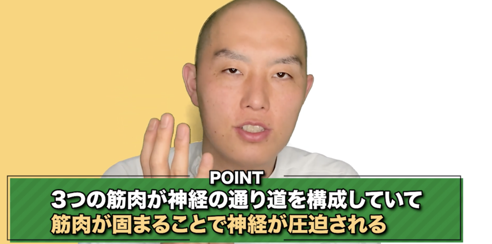
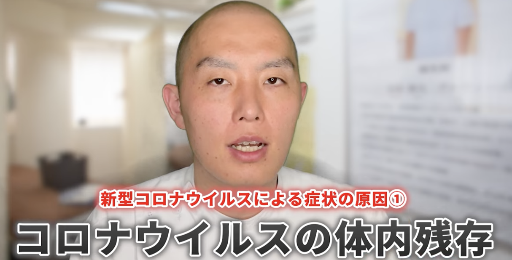
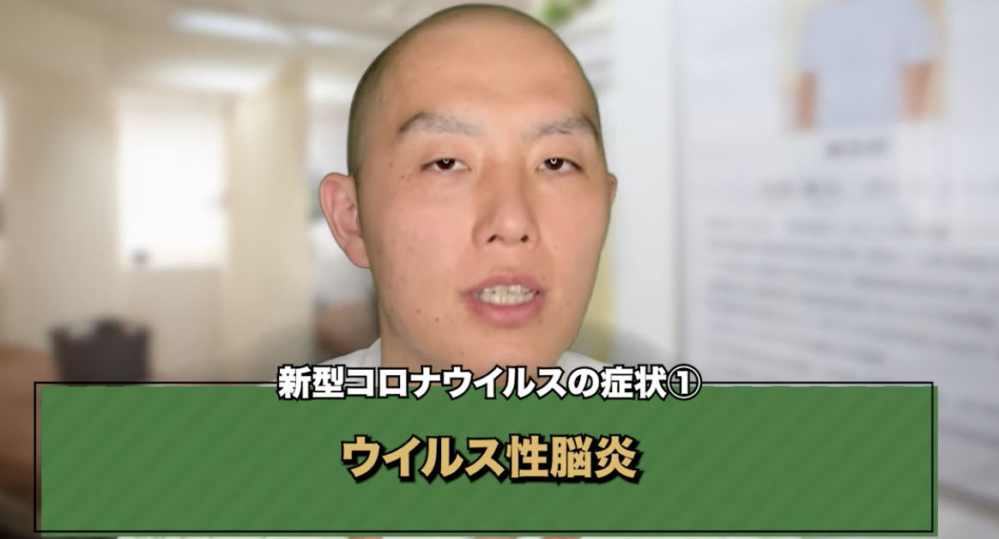
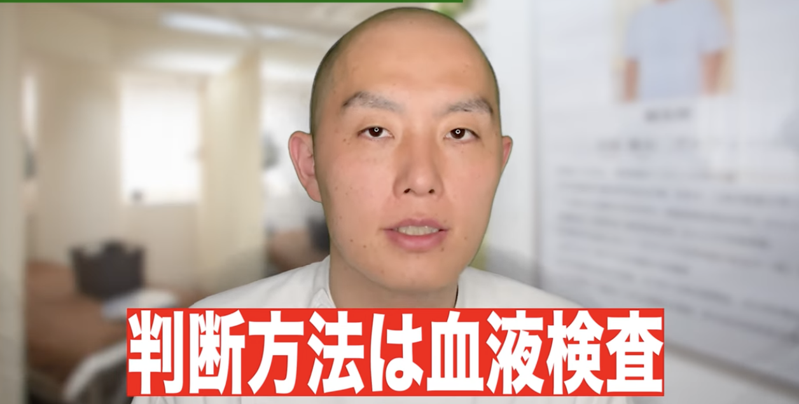
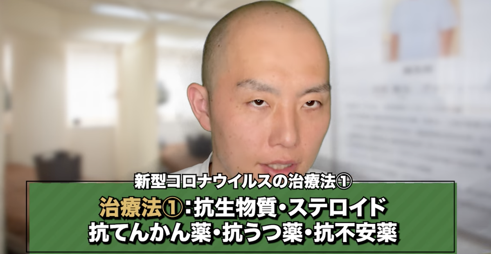
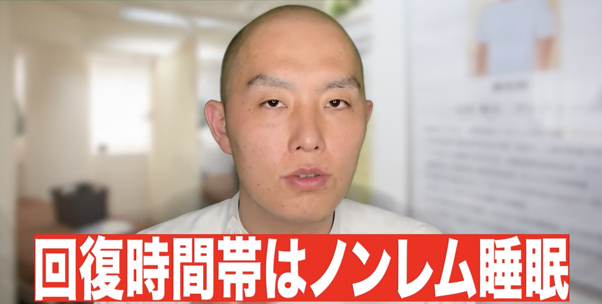

新型コロナウイルスの後遺症の鍼灸
感染後に長引く倦怠感・ブレインフォグ・嗅覚障害・自律神経症状に対し、全身の自己回復力を引き出す施術解説。
院長YouTube解説・関連動画
 ▶ YouTube
▶ YouTube【新型コロナ後遺症】息苦しさや倦怠感…鍼灸治療の回復事例5選
強い倦怠感や息苦しさが続いた新型コロナ後遺症の回復事例5選をわかりやすく紹介している動画です。
動画を見る（YouTubeへ） →▶ 関連する院長YouTube動画をもっと見る（あと1本）▼

新型コロナウイルス感染症の後遺症とは

新型コロナウイルス感染症（COVID-19）は、2019年12月に中国・武漢で原因不明の肺炎として報告されました。その後、日本を含む全世界に感染が拡大しています。
新型コロナウイルス感染症において、新型コロナウイルス感染症を発症した一部の人にさまざまな後遺症を認めるということがわかってきています。
代表的な後遺症の症状は、疲労感や倦怠感、関節痛、筋肉痛、咳、喀痰、息切れ、脱毛、記憶障害、集中力低下、頭痛や抑うつ、嗅覚障害、味覚障害、動悸、下痢、腹痛、睡眠障害、筋力低下などです。
新型コロナウイルス後遺症の原因は２つ

新型コロナウイルス後遺症の原因は２つあります。
①コロナウイルスが体に残存しているケース
②コロナウイルスへの過剰な免疫反応が起こっているケース
①コロナウイルスが体に残存しているケース
コロナウイルスは鼻から入って鼻に存在するアンジオテンシン変換酵素２という酵素に集まります。ここで大暴れしていく中で血流によって脳に侵入し、脳内でウイルスが残存しているケースがあるのです。
この場合、嗅覚障害やブレインフォグ、感覚麻痺、慢性疲労性症候群などの症状が出ます。
②コロナウイルスへの過剰な免疫反応が起こっているケース
急に熱が上がる、微熱が続く、不整脈など症状は似ていますが、免疫反応に特化した症状が出ます。当院でも、皮膚のただれやかゆみ、抜け毛、長期的な微熱、風邪症状など色々なケースが見られます。

当院では、新型コロナウイルスの症状は、ウイルス性脳炎であると考えています。
症状は様々で、コロナウイルスが体に残存している場合は嗅覚障害やブレインフォグ、感覚麻痺、慢性疲労性症候群などの症状が出ます。過剰な免疫反応を起こしている場合は、皮膚のただれやかゆみ、抜け毛、長期的な微熱、風邪症状など免疫反応に特化した色々な症状が出ます。

🎥 他のYouTube切り抜き・解説を読む（あと5件）▼
新型コロナウイルス後遺症の改善方法

新型コロナウイルス後遺症の改善方法は、抗生物質、ステロイド、抗てんかん薬、抗うつ剤抗不安薬です。薬をベースにビタミンCやグルタチオン、漢方などを取り入れて改善を行います。他にも上咽頭擦過法や鍼灸などの方法があります。
鍼灸では、体を整えることによって改善を行います。当院では自律神経、免疫反応、副腎疲労、副腎皮質の機能回復、ブレインフォグ対策を行なっています。

コロナ後遺症では、人にはよりますが不眠症に陥っている人が多いです。不眠症に陥っている人は基本的に体は回復していきません。
その理由は、脳波やノンレム睡眠、成長ホルモンで説明できます。人間が1番回復している時間はノンレム睡眠の時です。ノンレム睡眠の時にはデルタ波という波形が出ます。デルタ派という波形が出ると成長ホルモンがどんどん出て体の修復や再生、回復ができます。
ウイルスが脳に入ってくると、脳の方で炎症症状が起きたり体の疲労感があったりすることでなかなか寝れないことがあります。そうすると、体を回復する時間に回復する機能がうまく働かないのです。
逆に寝すぎる人もいます。これは、深い睡眠がうまく取れないために1日中眠気が取れないことがあるのです。ブレインフォグや慢性疲労症候群の人に見られる症状で、中には周りが心配するほど寝ている人もいます。
コロナ後遺症と自律神経の関係
自律神経は体の様々な機能をコントロールしており、心拍数、呼吸や消化などあらゆるものを制御する神経です。
自律神経には交感神経と副交感神経の２つの種類があります。交感神経は戦うか逃げるかの反応を制御する神経、副交感神経は休息と消化の反応を制御する神経です。これらが一緒に働き外部環境の適応できるように調整しているのです。
最近の研究では脳の一部の視床下部、視床下部室傍核(PVM)に存在する細胞であるアストロサイトと呼ばれる種類の神経細胞が自律神経の活動に影響を与えることがわかっています。脳内の情報伝達を助ける役割をするのです。
院長が尊敬している大阪の鈇田クリニックの鈇田先生はこのアストロサイトがコロナの影響を受けてしまって、後遺症の症状であるブレインフォグや慢性疲労症候群、筋痛性能脊髄炎などの色々な症状を出してしまうと言っています。
院長も初めは後遺症の症状になぜ鍼灸が効果を発揮するのか分かりませんでした。しかし、なぜ鍼灸が後遺症に効果があるのかは自律神経とアストロサイトを理解することでわかります。
自律神経の研究では副腎皮質刺激ホルモン放出因子(CRF)が注目されています。CRFはストレス反応を制御する重要な役割を果たしています。副腎皮質刺激ホルモン放出因子は交感神経を活発化させストレスに対する体の反応を引き起こします。
自律神経の研究者たちは副腎皮質刺激ホルモン放出因子がストレスホルモンのレベルを上げることを発見しています。脳のアストロサイトの活動が邪魔されるとカテコールアミンの増幅が抑えられるのです。これは、アストロサイトがCRFの効果を増幅し自律神経の反応を強化する役割を果たしていることを示唆しています。
簡単に言うと、脳の伝達を賄うアストロサイトという細胞が調子が悪くなって活動が邪魔されると、交感神経が落ち込んで慢性疲労症候群という体がだるい、やる気が出ないなどの副交感神経刺激症状が出るということです。
違う研究では自律神経の中枢である視床下部室傍核への薬物投与によってアストロサイトの活動とアドレナリンの活動が抑えられたということがわかっています。ただし、ノルアドレナリンの上昇は影響を受けなかったと報告されています。これはアストロサイトの機能と自律神経の反応が脳の部位によって異なる可能性を示しています。
ストレスは交感神経に影響し、カテコールアミンを引き上げて心拍数や血圧が上昇します。カテコールアミンは交感神経の時によく働くホルモンであるアドレナリンのことです。
長期的なストレスがかかると体にとって非常に有害で、心臓病や糖尿病などのリスクを増加させてしまいます。交感神経が昂ってしまうとアドレナリンが増えて血圧が上がったり血糖値が上がったりして心臓病や糖尿病のリスクが上がります。
長期的なストレスは体にとって良くありません。自律神経と脳のアストロサイトはストレス反応や体の調整にとって重要な役割を果たしているのです。
福井から来院されたKさんのケース
コロナ後遺症のアプローチは慢性上咽頭炎の領域と脳炎の領域、体の軸といった3つの病態が改善することで回復するという判断で施術を行っています。
当院でもこの3つのアプローチをしています。改善方法は、薬、Bスポット、鍼の領域の3つに分かれています。Kさんの場合、体の軸は9割良くなっています。
Kさん自身の体感でも7割まで回復したと言っており、現在休憩しながら勉強を30分行うことことができるようになったと言います。Kさんの場合、回復のゴールが一気に長い時間勉強したいということだったため、残りの体の軸の1割は鍼で回復を促します。
改善の過程
Kさんの体を見ると一段と良くなっていました。耳鼻科の先生も4分の1の残っていますがそんなにひどくないとはっきりおっしゃったそうです。当院では体の機能を元に戻すだけのため、あと5回で回復すると見込んでいます。
前回まで背中の症状など細かい症状があると言っていましたが、現在通常の姿勢の状態をしているには何もないとのことです。昨日は調子は良かったのですが、朝ランドセンを飲み忘れて3時間ほど2箇所に行って家に帰ったらおかしいと思い、ランド戦を飲んで夕方まで寝ていたら復活して夜は元気だったそうです。Kさんの目標は仕事に行けるようになることです。
Q.1回良くなる過程で悪くなりますが元に戻るのでしょうか？
A.戻ります。2パターンあり中途半端に改善したと思って勘違いして悪化するパターンとそもそも改善しないパターンです。
改善しない人はやってほしいことを全部やりません。例えば、ランドセンが怖いから飲まなかったり、お勧めする耳鼻科にいかなかったりなど改善したいという気持ちで来院されますが私のゴールの手順を踏んでくれないのです。もちろんそれが正解ではないことは分かっていますが、ぜひ手順を踏んでほしいと思います。
手順を踏んでいる人とは良くなっています。Kさんの息子さんは調子が良くランドセンも半分以下で毎朝散歩に行っていて気持ちいいと言っているそうです。改善しない人はしたと思っているだけでそもそも改善する行動をしていないのです。私がみてきたものを信じてくれない人はよくいます。
先日来院した方も3年苦しんでいる方で、マッサージをずっとしていて改善しないために来院されましたが、改善の手順を説明しても理解してくれませんでした。よくなる手順を知らないためまた再発すると思います。
担当している方の中には結核になってから8年寝たきりの方もいます。その方は35歳からずっと寝たきりで、本人の中で改善しないのが当たり前で家族も許容してしまっているのでどうしようもありません。
当院では、当院で改善してきた人がやっていることを1度全部やってみてほしいのです。再発が恐ければランドセンを飲み続けたり半年に1回体を見させてもらうこともできます。
Kさんは耳鼻科でも、「でも」という人は改善しない、うんうん言っているし笑っているから改善すると言われてびっくりしたそうです。
自分がやって改善しない人や納得いっていない人は今でも頭の中でなぜ改善しなかったのかと反芻しています。そのように向き合ってきて改善するタイプとしないタイプがだんだん分かってくるのです。Kさんは大丈夫なタイプに見えるため、何も考えない方が良いです。
この日の施術はクラッシュがないようにはしていますが、前回よりも刺激を増やしてもう１段階底上げしていきました。現状非常に良い状態で、鍼では95%完成しました。
上咽頭炎が25%残っているというということですが、そこはもぎたて耳鼻咽喉科のBスポットを受け、脳の症状はランドセンで落ち着くでしょう。上咽頭炎と体の5%と脳の反応が落ち着けば全回復すると見ています。Kさんの目標は職場復帰のため、その領域まで回復してほしいです。
Q.調子はどうですか？
A.すごく良くなってきた。2回目で結構上がった感じがあって地元に戻ってからも動ける量が格段に増えた。様子を見ながらではあるが元気だった。前みたいな背中の違和感のような症状は減ってきた感じがあり、触るとあるくらいで普通にしていれば自覚はない。息切れやだるさなども全然なく、動きが多いと後頭部に頭痛があるが倦怠感は出なくなってきた。ランドセンも変わらず飲んでいる。
施術を受けて2日目に行けそうだと思って移動を地下鉄にした。寄り道してお昼を食べて東京駅から40分くらい乗って帰りも新幹線にのって座ったまま帰れそうな感じがあった。一応途中から横になったが頭痛も起きず元気だった。職場復帰ができそう。
Q.あとは上咽頭がどこまで回復するかだと思います。耳鼻科に入っていますか？
A.前回はあと8分の1と言われていて結構減っていた。昨日は福井の耳鼻科に行ったが以前ほど痛くなかった。
Kさんの体の状態は良いです。ここからは内臓、筋肉、血流なども含めて元に戻す全身のアプローチになります。全体的に刺激をして活動量が増やせるといいと思っています。人の話やアドバイスは聞かなくていいので自分の体感で動いてほしいです。Kさんは良くなっているサイクルに入っているため、ランドセンを飲み続けて耳鼻科で卒業まで通えば、鍼の施術は間隔を開けていいです。
コロナ後遺症は脳からくる症状、上咽頭の症状、体の症状など複合的な見方をします。Kさんも不安ではあったがやってみないとわからないし少しずつは良くなっているから何かすればまた戻れるに違いないと思っていると言ってくれました。
施術の感覚は２〜３週間空けるのが理想です。生活パターンなど新しいものを取り入れなくて良く、今まで通りで良いです。職場復帰する時も少しずつ負荷をかけてほしいです。背中のビリビリが寝転んだ状態である段階の場合、無理してほしくはないが自分の感覚で良いです。ビリビリがある間は改善していないため無理はしないでほしいですが、上咽頭の施術を続けてランドセンを飲んでいれば取れてくると思います。
今回、Kさんは初回で見た悩みは大体消えていました。仰向けで寝ると背中が痺れる症状はコロナ後遺症の症状の残りかすのようなもので、咽頭扁桃の症状が消えて、体ができあがれば消えると見込んできます。そうすればクラッシュも起きなくなります。経過は非常に良好です。
後遺症の症状に関しては色々な解釈があるため人によって違います。院長が見てきた数百例でいうならクラッシュする人は何をしてもします。体が出来上がって終えばしないという考え方です。
良くなればクラッシュしません。調子が良い状態がずっと続いていつの間にか忘れ、ランドセンを飲み忘れるようになって安定します。中途半端にまだ残っていたり少しだるさがあったりするのに自分で判断をしてしまう人がいます。そういう人はほぼ100%クラッシュしています。クラッシュして初めて改善していなかったことに気づくのです。
当院では壊れている状況が少しでも残っていればクラッシュはいつでもするという考え方です。担当している間に見た人は明らかに良くならない体が変わらないパターンと悪いものが残っていて調子が悪いパターンがあります。後者の場合取れていくとじわじわ良くなって安定して職場復帰します。
コロナ後遺症は自分の症状が何で悪いのかわからなくなってきます。コロナ後遺症から初まって、急に姿勢や自律神経が悪いと思うようになり、気の流れが悪いというふうに悩みがすり替わって最終的に何が悪くて何が良くてどうなりたいかが説明できなくなるのです。これは色々な人がいて色々なことを言われすぎて起こります。
当院では体が良くなれば自然に回復していくという考え方です。
現在のKさんの回復状況
Kさんは現在、減ってはいますが背中のビリビリがたまに出るとのことで当院に通われています。昨日もかなり動いたので、いつもであれば後頭部やこめかみの頭痛が出ますが出なかったと言います。この日は名古屋から川崎の耳鼻科に行くために早起きしてから当院に来院されました。
コロナ後遺症から良くなった人は自分の感覚で動くため活動量が上がっていきどんどん動いてしまいます。それでクラッシュするわけではありませんが、周りが心配する状況になるのです。もちろん疲れはしますが、前のような後遺症の感覚が出ないためどんどん動けるようになり回復していきます。
10日前は車の運転の距離を少し伸ばしたら夜久しぶりに後頭部とこめかみの頭痛が出たそうですが、倦怠感は出ず2日間大人しく寝ていたら改善したとのことで、ぜひ自分の感覚でゆっくり負荷をかけていってほしいと思います。
耳鼻科では前回8分の1くらい良くなっていると言われて今回は数字は言われませんでしたが、結構強めに施術を行い出血の量が少なかったとのことです。
話を聞いて体を見る限り、体はだいぶ出来上がっていると思います。背中の違和感が出るがなくなると理想ですが、経過でみないとわからないため、施術の感覚を空けても良いのではないかという提案を行いました。
Kさんは昨日息子さんの大学の説明会に行くために名古屋に行って、今日の朝川崎の耳鼻科に行ってそのあと銀座の当院にくるという非常にハードなスケジュールをこなせるくらい体が良くなりました。
前回の施術から体も変わっておらず体の土台に関しては十分に完成したと言えます。耳鼻科の上咽頭の改善ももうすぐゴールまでいくはずです。ランドセンも飲んでいて酸素カプセルも行っているとのことで、当院ではある程度できることは終わったと思っています。Kさんはもうすぐ十分回復して職場復帰もされると見込んでいます。
コロナ後遺症の最大の問題点は、風邪の引き始めのような状態がずっと続いていることです。
その中には自律神経と体の末端の血流、むくみ感が正常に保たれていない人が多くいます。当院では末端の血流に関して改善が完了していない人は、多くの人が2〜4年ほど長期間悩んでいます。
この3つの特有の症状をKさんはまだ持っています。そのため、ベンゾジアゼピン系の薬、ランドセンやフルボキサミンなどの薬を飲むのも1つの手段です。ランドセンを飲むと末端の血流が改善する傾向にあります。まず、後遺症特有の体を改善して欲しいと思います。
後遺症の症状には山があり、山を越えない限りは改善しないという認識で施術を行っています。今まで当院で拝見した人でも山を乗り切った人しか改善した人を見たことがありません。もちろん、当院で拝見していない人が改善していたり当院で改善できなかった人が後日改善していれば良いのですが、当院に来院された人では想定したゴールを超えた方しか社会復帰できていないのが現状です。
ぜひ山を登ってゴールを超えてほしいと思います。山を超えることができない人もいます。ここでは当院で見たものや改善した人が処方されたもの、したこと、改善しない人の共通点でしか判断ができないため、小さな範囲での話ではありますが、少しでも参考にして元の生活に戻って欲しいと思っています。
コロナ後遺症は時間が経過すると改善しにくいのでしょうか？
Q.コロナ後遺症に悩まされて２年です。症状は、息切れ、ブレインフォグ、舌の痺れで動かなかったら体の調子が悪くなったため体が動ける時はジムで筋トレをしています。コロナ後遺症も時間が経過すると改善しにくいのでしょうか？それとも人によって違いますか？
A.コロナ後遺症は時間の経過で良くなることはありません。当院でも２〜４年同じ症状が続いている人が多くいます。当院で色々な方を見てきての印象としては新薬が出るまで完全に改善することはないのではないかと思っています。
大阪のクリニックで改善を行い、断薬して離脱症状、再発のない人が本当のゴールです。当院でも断薬できない人が多くいらっしゃいます。ベンゾジアゼピン系の薬がコロナ後遺症に対して思った以上に効果があるのですが、効果があると同時にやめてしまうと後遺症をぶり返す人が多いため、ベンゾジアゼピン系の薬をやめれるかどうかが本当の勝負どころになります。
動かなくなって調子が悪いのであれば後遺症は全然改善していません。筋トレして調子を維持していると思っているかもしれませんが、本当に元気になると以前のように体力も戻って筋トレもできるようになります。
実際当院に通っていた方の中にも今はアメフトのトレーニングに夢中の人がいます。その方は微熱がずっと続いていて大学も休学していましたが、微熱が下がって体も回復し、体が正常な機能を保って運動しています。
動かなかったら悪化するのではなく、元々悪化する土台があって筋トレで紛らわせているだけのため改善を行わなければ回復していかないのではないかと思います。
コロナ後遺症は適切な改善を行うことが必要です。当院でも後遺症専門鍼灸院から来院される人が多いですがコロナ後遺症の専門の改善方法はありません。改善方法はその病院の先生の解釈によるのです。
コロナの後遺症を理解して鍼灸施術を行っている人は少ないと思います。当院ではNCNPやヒラカタクリニックなどの改善の方針を参考にして施術を行っています。西洋医学的な考え方で施術をしているのです。
コロナの後遺症の発生機序を理解して改善を行なっている鍼灸師や病院、耳鼻科を選んで適切にアプローチしないと回復していきません。きちんとしたアプローチを受けることが大事なのです。
この症状は回復上限があります。脳の組織がどれだけ壊されていないかがポイントで、脳が壊されてしまうと機能回復しにくいです。回復するかどうかは人によりますが、その人の重症度によるのです。コロナにかかって影響を受けた領域によって上限が違い、その領域が広ければ広いほど回復しにくいのです。
ぜひ正式な手順の改善を受けてほしいです。正式な改善の手順を踏んでから回復するかしないかを判断してください。
2つの病態側面と「無理をさせない」回復設計
銀座そうぜん鍼灸院の臨床解説では、コロナ後遺症を「ウイルス残存・中枢神経影響型（ブレインフォグ・嗅覚障害・慢性疲労）」と「過剰免疫反応型（微熱・皮膚トラブル・脱毛・動悸など）」の2側面から捉えています。
回復途上で強すぎる刺激や無理な運動を行うとクラッシュ（PEM）を招きやすいため、「1〜2日で治まらない悪化は好転反応ではなく悪化」と明確に判断し、深いノンレム睡眠とエネルギー代謝（ATP）の回復に合わせた穏やかなペース配分を重視します。
コロナ後遺症のケアに用いられる代表的な7つのツボ

📌 詳細データ・ツボ一覧表を開く▼
| ツボ名（経穴） | 位置の目安 | 主な狙い・役割 | セルフケアの注意点 |
|---|---|---|---|
| 風池（ふうち） | 後頭部の髪の生え際、乳様突起と僧帽筋の間のくぼみ | 頭痛・めまい・不眠・首肩こり、後頭部循環の調整 | 強く押しすぎるとめまい悪化のため弱〜中刺激で |
| 天柱（てんちゅう） | 後頭部の生え際、首中央の太い筋（僧帽筋）のすぐ外側 | 鼻症状・嗅覚障害・自律神経の緊張緩和 | 3秒押して離す程度。倦怠感が強い日は回数控えめに |
| 合谷（ごうこく） | 手の甲、親指と人差し指の骨が交わる手前 | 頭痛・咳・鼻症状の緩和、入眠サポート | 妊娠中は強い刺激を避ける |
| 迎香（げいこう） | 小鼻（鼻翼）の最も膨らんだ部分のすぐ外側 | 鼻粘膜血流の改善、嗅覚障害・鼻閉・後鼻漏ケア | 皮膚が薄く内出血しやすいため、こすらず優しく3〜5秒 |
| 百会（ひゃくえ） | 両耳の先端を結ぶ線と正中線が交わる頭頂部 | ブレインフォグ（頭重感・集中力低下）・睡眠の質改善 | 中指の腹で深呼吸しながら心地よい圧で |
| 内関（ないかん） | 手首内側の横ジワから指3本分肘側、2本の腱の間 | 動悸・息切れ感・不安・吐き気・不眠の鎮静 | 指先に電撃痛が走る強圧は避ける |
| 足三里（あしさんり） | 膝の外側下のくぼみから指4本分下、すねの骨の外側 | 強い全身倦怠感・胃腸虚弱・免疫と体力の底上げ | クラッシュ直後は強揉みせず穏やかな温灸にとどめる |
査読論文が示す「Long COVID・嗅覚障害・倦怠感×鍼灸」の科学的エビデンス
📚 査読論文データ・出典表を開く▼
| 年・研究デザイン | 対象・規模 | 主な結果と臨床的意義 | 限界・出典 |
|---|---|---|---|
| 2023年 RCT | Post-COVID入院リハ患者 160名（鍼併用80 vs 単独80） | 鍼併用群はBarthel・Borg・呼吸困難（MDS）・6分間歩行の全4指標で有意改善（単独群は2指標のみ）。 | 10〜14日間の短期評価。J Pharmacopuncture (PMID: 37799621) |
| 2024年 盲検RCT | COVID関連難治性嗅覚障害 40名 | 周波数制御耳鍼群は嗅覚VASが2.80→5.22へ有意改善（p=0.007、群間ANCOVA p=0.000）、対照群は有意差なし。 | 小規模・2回介入・耳鍼プロトコル。J Acupunct Meridian Stud (PMID: 38686430) |
| 2025年 コホート研究 | 独墺Post-COVID患者 79名（鍼85%） | 平均7回受診後に全般改善率62%±29%、倦怠感・身体機能・労作時呼吸困難がいずれもP<.001で有意軽減。 | 後ろ向き観察研究・漢方等併用あり。Medicine (PMID: 40327434) |
| 2024年 系統的レビュー | ウイルス後嗅覚障害 9研究（計687名） | 6 RCT中5試験でTCM（鍼・経穴注射）が対照群より良好。軽〜中等度の有害事象を2試験で報告。 | 研究全体の質が低く非COVID例も含む。Integr Med Res (PMID: 38831890) |
| 2024年 メタ解析 | 倦怠感・抑うつ・認知・頭痛・不眠 110 RCTs | Fatigue（P<0.01）・HAMD（P<0.01）・MMSE（P<0.01）・PSQI（P<0.01）で対薬物・対偽鍼とも有意改善。 | 同一症状群の一般RCT統合（直接検証は今後）。Front Neurol (PMID: 39099786) |
| 2025年 米国パイロットRCT | Mayo Clinic 嗅覚障害 30名（標準治療＋鍼10回） | 鍼関連の合併症ゼロと高い安全性を確認。一方、通院負担による脱落対策が課題。 | 小規模パイロット・安全性検証。PubMed PMID: 40375879 |
| 2022年 国内症例報告 | COVID-19後遺症（倦怠感・嗅覚異常） | 国内学会誌（伝統医療看護連携研究）にて倦怠感・嗅覚異常に対する鍼灸適用経過を報告。 | 単一症例報告（対照群なし）。J-STAGE |
医療機関の受診を最優先すべきレッドフラッグ
⚠ 救急・循環器・呼吸器・脳神経内科を最優先すべきサイン
安静時の強い息切れ・酸素飽和度（SpO2）の低下（目安93%以下）、胸痛・失神・激しい不整脈（心筋炎・肺血栓塞栓症の除外）、片側ふくらはぎの急な腫れ・熱感（深部静脈血栓症）、意識障害・けいれん・高熱と激痛、食事・水分が摂れない著しい消耗や強い抑うつがある場合は、直ちに専門医療機関を受診してください。
参考文献・出典
- 銀座そうぜん鍼灸院「新型コロナウイルスの後遺症の鍼灸」
- Omarova et al., J Pharmacopuncture (2023) — PubMed PMID: 37799621
- Mohebbi et al., J Acupunct Meridian Stud (2024) — PubMed PMID: 38686430
- Kraft et al., Medicine (Baltimore) (2025) — PubMed PMID: 40327434
- Zou et al., Integr Med Res (2024) — PubMed PMID: 38831890
- Lam et al., Front Neurol (2024) — PubMed PMID: 39099786
- Armstrong et al., Mayo Clinic Pilot RCT (2025) — PubMed PMID: 40375879
- 三保翔平『伝統医療看護連携研究』3(2):59–63 (2022) — J-STAGE
よくある質問（FAQ）
Q. 病院の診療科ごとに言われることが違い困っています。▼
Q. 激しい運動やセルフケアをした方が良いですか？▼
Q. サプリや漢方はたくさん飲んだ方が良いですか？▼
あわせて読まれる関連疾患（特に対応することが多い症状）
吸入薬で止まらない長引く空咳に対し、自律神経・気管支神経の興奮と逆流性食道炎の視点から整える施術解説。
交感神経と副交感神経のバランス崩れによる不眠・倦怠感・めまい・胃腸不調を、体と神経の両面から整える解説。
脳の過剰興奮による聴覚過敏・頭鳴り・めまい・片頭痛に対し、筋肉・神経・内臓の乱れから脳を鎮める鍼灸解説。
頭の中で「キーン」「ザー」と音が鳴り続ける状態を、脳の過覚醒（自律神経）と首肩の深層筋から整える施術解説。
肘の内側での尺骨神経圧迫による小指・薬指のしびれに対し、前腕の深層筋を緩め神経再生を促す施術解説。
30歳以上の女性の約4人に1人にみられる子宮筋腫に対し、骨盤内の血流と自律神経バランスを整える施術解説。
おひとりで悩まず、まずはご相談ください
銀座本院・川口・大宮・横浜・博多・田無の各院でご予約を承っております。